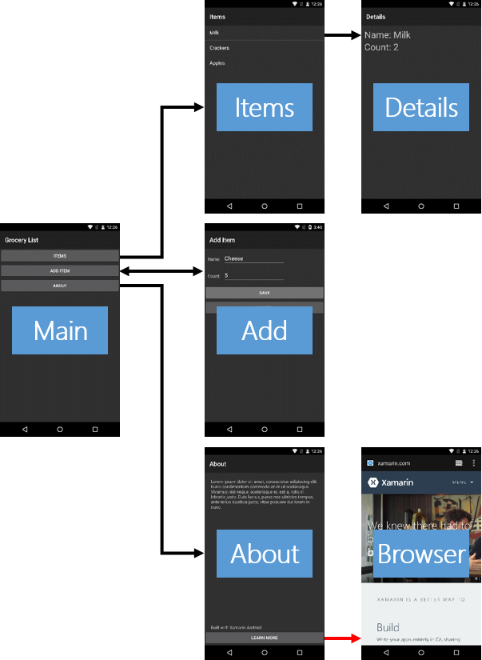

Durée
10 minutes
Objectifs
Cet atelier couvre la façon de lancer une activité système d'Android (c'est-à-dire une activité installée avec Android et ne faisant pas partie de votre application). Vous allez démarrer l'activité du navigateur Web et lui transmettre l'adresse de la page Web que vous souhaitez afficher. La ligne rouge dans l'image ci-dessous indique la partie de l'application sur laquelle vous allez travailler.
Challenge
Utilisez les recommendations ci-dessous pour réaliser l'exercice.
- Ouvrez AboutActivity.cs.
- Localisez la méthode
OnLearnMoreClick. - Créez une Intent avec
ActionViewet duhttp://pour lancer le navigateur. - Appelez
StartActivitypassez lui l'Intent. - Exécutez et testez votre application.
Steps
Below are the step-by-step instructions to implement the exercise.
Launch the web browser
- Open AboutActivity.cs.
-
Locate the
OnLearnMoreClickmethod. -
Create an Intent with an Action of
ActionView. You can pass the symbolic constantIntent.ActionViewto the Intent constructor or create the Intent first and then use theSetActionmethod. -
Set the Data of the Intent to a web address such as
http://www.xamarin.com. The Data in an Android URI so you will need to use theAndroid.Net.Uri.Parsemethod to convert a string to a URI. Once you have a URI, use theSetDatamethod to load it into the Intent. The code is shown below, hidden behind a button. -
Call
StartActivityand pass it the Intent. - Run the app to test your work. Navigate to the About Activity. Touch the "LEARN MORE" button. Verify the web browser launches and displays the page you specified in the Data.
Résumé
Dans cet atelier, vous avez démarré une activité qui ne faisait pas partie de votre application. C'est l'une des principales forces de la plateforme Android car cela permet à votre application de profiter des autres activités installées sur l'appareil. Cela vous aide parce que cela signifie qu'il y a moins de code à écrire pour que votre application soit prête pour le marché. Cela aide également l'utilisateur parce qu'il utilise ses activités favorites pour des choses comme les contacts, la caméra, l'e-mail, le Web, etc. au lieu des versions non standard que chaque développeur d'application pourrait créer.